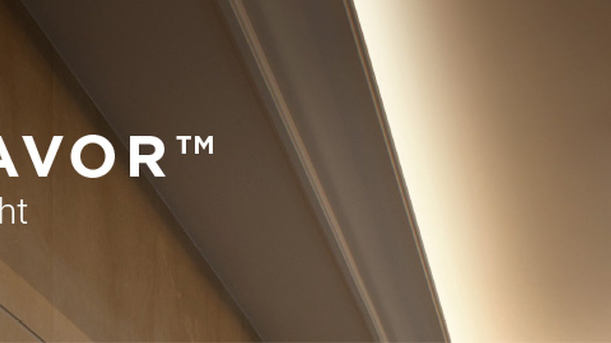

Fita de LED
Linha base para iluminação indireta, marcenaria, vitrines e integração com perfis.
Ver Produtos
Iluminação LED B2B • Brasil
Fitas LED, COB, Neon Flex, perfis de alumínio, fontes 24V e sistemas lineares para integradores, distribuidores, arquitetos, lojas e obras com especificação técnica.
Produtos Principais
As categorias principais levam para páginas de coleção em português, com foco em produto, aplicação, acessórios do sistema e dúvidas técnicas.
Linha base para iluminação indireta, marcenaria, vitrines e integração com perfis.
Ver Produtos
Fita sem pontos visíveis para sanca, perfil de alumínio, loja e aplicações premium.
Ver Produtos
Neon Flex para fachadas, sinalização, vitrines e linhas aparentes com proteção.
Ver Produtos

Soluções lineares para escritório, loja, hotel, circulação e áreas técnicas.
Ver Produtos
Sistema modular para projetos comerciais com spots, lineares e flexibilidade de layout.
Ver Produtos
Fonte para fita LED, COB e Neon Flex com dimensionamento por metragem e potência.
Ver ProdutosSéries Populares de Fita LED COB
Essas páginas atendem buscas específicas de projeto e ajudam o visitante a chegar direto na especificação correta.
Aplicação: sanca, quarto, hotelaria e áreas de luz quente.
Ver DetalhesAplicação: cozinha, vitrine, bancada, loja e área de trabalho.
Ver DetalhesAplicação: ambientes comerciais, cenários, displays e decoração técnica.
Ver DetalhesAplicação: linhas longas, projetos com fonte centralizada e menor queda de tensão.
Ver DetalhesAplicação: áreas úmidas, espelhos, cozinhas técnicas e ambientes protegidos.
Ver DetalhesNeon Flex
Os links de Neon Flex conectam a coleção principal às variações mais procuradas por efeito, flexibilidade, proteção e tensão.
Para fachadas, campanhas, displays e projetos com mudança de cor.
Ver DetalhesPara contornos, curvas, letreiros e linhas aparentes de efeito contínuo.
Ver DetalhesPara área externa protegida, fachada, vitrine e ambientes com umidade.
Ver DetalhesPara linhas maiores com fonte 24V e planejamento por zona de instalação.
Ver DetalhesSoluções por Aplicação
As páginas de aplicação conectam busca SEO com necessidade técnica: ambiente, proteção, temperatura de cor, fonte, perfil e tipo de fita.
Luz indireta com COB 24V, 3000K/4000K, perfil quando necessário e fonte dimensionada.
Ver SoluçãoNeon Flex, IP65/IP68, vedação, fonte protegida e manutenção planejada.
Ver SoluçãoCOB 4000K, perfil de alumínio e instalação sob armário para luz funcional.
Ver SoluçãoCOB 3000K, RGB, cabeceira, sanca e cenas decorativas com controle adequado.
Ver SoluçãoIP65, backlight de espelho, fonte protegida e luz neutra para áreas úmidas.
Ver SoluçãoCOB 4000K, Neon LED, display, prateleiras e fachadas comerciais.
Ver Solução
OEM Manufacturing
A página inicial combina a clareza de categorias com o posicionamento de fabricante: para B2B, o valor está em especificar produto, tensão, potência, proteção, embalagem, lote e documentação antes da produção.
Projetos
Use esta área como vitrine futura para casos reais. Por enquanto, ela direciona para as páginas de aplicação mais importantes do cluster.


COB 4000K, Neon LED e trilho magnético para ambientes comerciais.
Ver aplicaçãoCertificações e controle
Quando houver documentos oficiais, esta seção pode receber certificados, relatórios, fichas técnicas e políticas de garantia. Nesta versão, ela prepara a estrutura comercial do site.
Informações por tensão, potência, IP, temperatura de cor e compatibilidade.
Indicado para distribuidores e projetos que precisam de repetição visual.
Orientação para fonte, perfil, corte, controle e instalação por zona.
Espaço preparado para certificados e fichas técnicas por linha.
Artigos Técnicos
O blog deve apoiar as páginas comerciais com guias técnicos, comparativos e respostas para dúvidas de projeto.
Comparativo entre efeito contínuo, pontos visíveis, aplicação em sanca, perfil e loja.
Ler artigoEntrada técnica para dimensionar tensão, potência e zonas de alimentação.
Ver fonte 24VConecta COB, cozinha, banheiro, marcenaria e acabamento profissional.
Ver perfisCTA Footer
Para cotação técnica, envie produto, metragem, tensão, cor, proteção IP, ambiente de instalação, quantidade estimada e prazo. A equipe pode indicar fita, fonte, perfil e acessórios compatíveis.